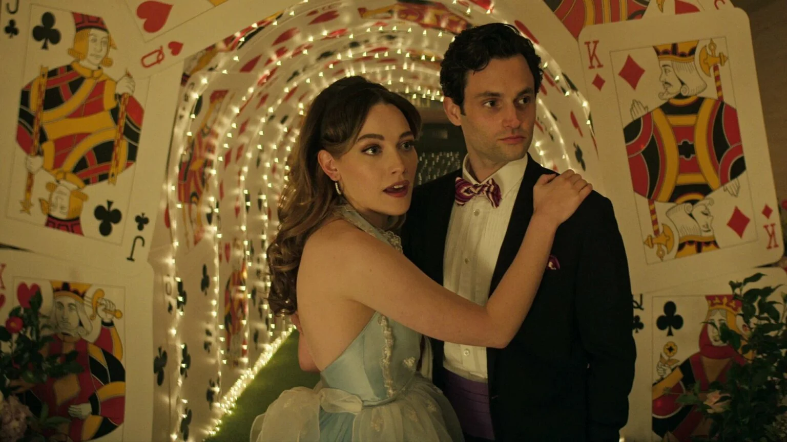

Популярні серіали на Netflix
Калейдоскоп
Серіал Калейдоскоп від Netflix — це завершена історія про пограбування найзахищенішого сховища у світі. Особливий він тим, що серії для кожного глядача випадають у випадковому порядку, але остання для всіх однакова — про пограбування. Так історія сприймається по-різному, персонажі розкриваються по-новому, але на сюжет та суть історії це ніяк не впливає.
Події розгортаються навколо майстерного грабіжника Лео Папа. Він зібрав групу талановитих злочинців. Свою операцію вони готували довго, продумали все до найдрібніших деталей. Історія охоплює понад двадцять чотири роки, звісно, не всі вони були витрачені на пограбування. Нам показують передісторію, і як всі грабіжники були пов’язані у минулому.
Головні герої рішуче налаштовані довести масштабну справу до кінця. На твою думку, що таке вдале пограбування? Коли тебе не спіймали чи коли ти отримав скарб? Що саме спіткало наших героїв та що чекало на їхню долю, ти побачиш у восьми епізодах серіалу.
Це посилання на трейлер до фільмуТи
Нещодавно на Netflix вийшла друга частина четвертого сезону серіалу Ти. Головного героя Джо Голдберга певною мірою можна назвати романтиком. Він начитаний, розумний, вихований хлопець, який закохується у жінок та робить все, щоб отримати їхню любов. Але часто кохання Джо закінчується трагічно.
Варто сказати, що він не тільки романтик, а й серійний вбивця. Головний недолік, через який стосунки не складаються добре.
Протягом чотирьох сезонів, він намагається позбутися своєї проблеми. Переїжджає до нових міст, змінює ім’я, починає життя з нуля, навіть одружується та заводить дитину. Щоправда, жінку він знайшов за своєю подобою. Як виявилося, вона та ще психопатка.
Опис серіалу може здатися тобі похмурим, але насправді це не зовсім так. Серіал не містить надто жорстоких сцен, присутня постійна інтрига, через яку хочеться дивитися одну серію за одною.
Це посилання на трейлер до фільму